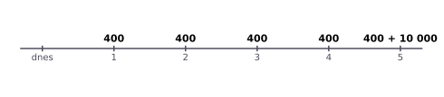
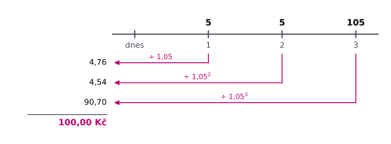

9 Dluhopisy a jejich oceňování
Studijní materiály
- Dahlquist, J. R., & Knight, R. (2022). Principles of finance. OpenStax, Rice University. https://openstax.org/details/books/principles-finance
- Chapter 10 - Bonds and Bond Valuation
- Chapter 12 - Historical Performance of US Markets
Výstupy z učení:
- Popsat základní parametry dluhopisu a rozlišit hlavní typy dluhopisů.
- Vypočítat cenu kupónového, bezkupónového i perpetuitního dluhopisu, také při výplatě kupónu častěji než jednou ročně.
- Vysvětlit, proč cena dluhopisu klesá, když rostou úrokové sazby, a určit, zda se dluhopis prodává s prémií, nebo s diskontem.
- Popsat tvary výnosové křivky a vysvětlit, co vypovídají o očekáváních trhu.
- Rozpoznat hlavní rizika dluhopisů a vysvětlit, co vyjadřuje rating.
Značení:
| Symbol | Význam |
|---|---|
| \(P\) | cena dluhopisu, tedy současná hodnota jeho peněžních toků |
| \(N\) | jmenovitá hodnota (nominál, jistina) |
| \(C\) | roční kupón v korunách (kupónová sazba \(\times\) \(N\)) |
| \(r\) | požadovaný výnos do splatnosti (YTM), kterým diskontujeme |
| \(n\) | počet let do splatnosti |
| \(m\) | počet výplat kupónu za rok |
9.1 Co je dluhopis
Firma, která chce postavit novou továrnu, nebo stát, který hospodaří se schodkem, potřebují peníze. Mohou si je půjčit v bance, nebo si je půjčit přímo od investorů vydáním dluhopisů. Dluhopis je cenný papír, kterým se jeho vydavatel (emitent) zavazuje platit investorovi (věřiteli) úroky, tzv. kupóny, a v den splatnosti mu vrátit půjčenou částku. Velkou půjčku tak lze rozdělit mezi tisíce investorů.
Pro emitenta je dluhopis dluh, tedy cizí zdroj financování. Držitel dluhopisu proto nemá ve firmě hlasovací právo jako akcionář. Kupóny a splacení dluhopisu jsou ale pro firmu povinnost: musí je platit včas, ať se jí daří, nebo ne. Dividendu akcionářům vyplácet nemusí. Pokud firma zkrachuje, dostanou věřitelé zaplaceno dřív než akcionáři.
Dluhopis nemusíte držet až do splatnosti. Po vydání se s dluhopisy obchoduje na trhu a můžete ho kdykoli prodat jinému investorovi za aktuální tržní cenu. Kolik je ta cena, spočítáme pomocí časové hodnoty peněz z týdne 8.
9.1.1 Základní pojmy
- Jmenovitá hodnota (nominál, jistina, face value) je částka, kterou emitent splatí v den splatnosti.
- Kupónová sazba je roční úroková sazba, ze které se počítá kupón. Vždy se uvádí jako roční, i když se kupón vyplácí častěji.
- Kupón je pravidelná platba úroku: kupónová sazba krát jmenovitá hodnota. Vyplácí se jednou ročně, pololetně, čtvrtletně, nebo i měsíčně.
- Datum splatnosti je den, kdy emitent vyplatí poslední kupón a splatí jmenovitou hodnotu.
- Výnos do splatnosti (YTM, yield to maturity) je průměrný roční výnos investora, který dluhopis koupí za aktuální cenu, drží ho do splatnosti a emitent mu vše zaplatí. Jde o diskontní sazbu, při které se současná hodnota peněžních toků dluhopisu rovná jeho ceně.
Příklad
Státní dluhopis se jmenovitou hodnotou 10 000 Kč, kupónovou sazbou 4 % a splatností 5 let vyplácí na konci každého roku kupón \(0{,}04 \times 10\,000 = 400\) Kč. Na konci pátého roku k poslednímu kupónu přidá i jistinu, celkem tedy 10 400 Kč.
Ceny dluhopisů se na trhu uvádějí v procentech jmenovité hodnoty. Cena 98,5 znamená, že dluhopis s nominálem 10 000 Kč stojí 9 850 Kč.
9.1.2 Typy dluhopisů
Podle emitenta rozlišujeme dluhopisy státní (v ČR je vydává Ministerstvo financí), komunální (města a kraje) a korporátní (firmy). Státní dluhopisy vyspělých zemí jsou nejbezpečnější, a proto také vynášejí nejméně.
Podle toho, jak se vyplácí úrok, rozlišujeme:
- Kupónový dluhopis vyplácí pravidelné kupóny a při splatnosti jistinu.
- Bezkupónový dluhopis (zero-coupon bond), nazývaný také diskontovaný dluhopis, nevyplácí žádné kupóny. Investor ho koupí pod jmenovitou hodnotou, tedy s diskontem (odtud druhý název), a při splatnosti dostane celou jmenovitou hodnotu. Výnosem je rozdíl obou částek. Bezkupónové jsou např. krátkodobé státní pokladniční poukázky.
- Dluhopis s pevnou sazbou má kupón stejný po celou dobu do splatnosti.
- Dluhopis s pohyblivou sazbou (floating rate bond) má kupón navázaný na referenční úrokovou sazbu (v ČR např. PRIBOR), ke které se přičítá pevná marže, např. PRIBOR + 1 %. Když sazby na trhu vzrostou, vzroste i kupón.
- Protiinflační dluhopis má kupón nebo jistinu navázanou na inflaci, a chrání tak reálnou hodnotu investice.
- Perpetuitní dluhopis nemá datum splatnosti a vyplácí kupón navždy.
Dluhopis může mít i zvláštní vlastnosti:
- Svolatelný dluhopis (callable bond) může emitent splatit předčasně, obvykle za předem danou cenu. V emisních podmínkách českých dluhopisů se tato možnost jmenuje předčasné splacení z rozhodnutí emitenta. Emitent ji využije typicky tehdy, když sazby klesnou a může si půjčit levněji.
- Dluhopis s prodejní opcí (putable bond) může naopak investor předčasně vrátit emitentovi.
- Konvertibilní dluhopis (convertible bond) může investor vyměnit za předem daný počet akcií emitenta.
9.2 Oceňování dluhopisů
Koupí dluhopisu získáte řadu budoucích plateb: kupóny a jistinu. Cena dluhopisu je proto současná hodnota všech jeho budoucích peněžních toků, přesně jako u série peněžních toků v týdnu 8:
- určíme peněžní toky (kupóny a jistinu) a kdy nastanou,
- každý diskontujeme požadovaným výnosem \(r\),
- současné hodnoty sečteme.
\[ P = \frac{C}{(1+r)^1} + \frac{C}{(1+r)^2} + \dots + \frac{C + N}{(1+r)^n} \]
Jako diskontní sazbu \(r\) používáme výnos, který investoři u dluhopisu s danou splatností a rizikem právě požadují. Ten se s podmínkami na trhu mění, kupón ale zůstává stejný.
Příklad
Dluhopis se jmenovitou hodnotou 100 Kč a splatností 3 roky vyplácí na konci každého roku kupón 5 %. Kolik za něj zaplatíte, pokud požadujete výnos 5 % ročně?

\[ P = \frac{5}{1{,}05} + \frac{5}{1{,}05^2} + \frac{105}{1{,}05^3} = 100 \]
Když se požadovaný výnos rovná kupónové sazbě, cena se rovná jmenovité hodnotě.
9.2.1 Využití anuity
Kupóny jsou stejné platby v pravidelných intervalech, tedy anuita. Cenu dluhopisu proto můžeme spočítat jako součet současné hodnoty anuity kupónů a současné hodnoty jistiny:
\[ P = C \times \frac{1 - \frac{1}{(1 + r)^n}}{r} + \frac{N}{(1 + r)^n} \]
U dluhopisu s dlouhou splatností tak nemusíme diskontovat každý kupón zvlášť.
Příklad
Státní dluhopis se jmenovitou hodnotou 10 000 Kč má kupónovou sazbu 4 % a splatnost 10 let. Kolik za něj zaplatíte, pokud požadujete výnos 5 % ročně?
Roční kupón je \(0{,}04 \times 10\,000 = 400\) Kč:
\[ \begin{aligned} P &= 400 \times \frac{1 - \frac{1}{1{,}05^{10}}}{0{,}05} + \frac{10\,000}{1{,}05^{10}} \\ &= 3\,088{,}69 + 6\,139{,}13 = 9\,227{,}83 \end{aligned} \]
Dluhopis koupíte pod jmenovitou hodnotou, protože jeho kupón (4 %) je nižší než výnos, který požadujete (5 %). Rozdíl 772,17 Kč dostanete navíc při splatnosti.
9.2.2 Bezkupónový dluhopis
Bezkupónový (diskontovaný) dluhopis má jediný peněžní tok: jmenovitou hodnotu při splatnosti. Jeho cena je tedy současná hodnota jedné platby:
\[ P = \frac{N}{(1 + r)^n} \qquad \qquad r = \left(\frac{N}{P}\right)^{1/n} - 1 \]
Z ceny bezkupónového dluhopisu snadno dopočítáme i jeho výnos do splatnosti, stejně jako úrokovou sazbu v týdnu 8.
Příklad
Bezkupónový dluhopis se jmenovitou hodnotou 10 000 Kč bude splacen za 5 let. Kolik za něj zaplatíte, pokud požadujete výnos 4 % ročně?
\[ P = \frac{10\,000}{1{,}04^5} = 8\,219{,}27 \]
Pokud byste ho koupili za 9 000 Kč a splatnost by byla za 3 roky, vydělali byste \((10\,000 / 9\,000)^{1/3} - 1 = 3{,}57\%\) ročně.
9.2.3 Perpetuitní dluhopis
Perpetuitní dluhopis vyplácí stejný kupón navždy, jeho cena je proto současná hodnota perpetuity z týdne 8:
\[ P = \frac{C}{r} \]
Dluhopis s kupónem 300 Kč ročně má při požadovaném výnosu 6 % cenu \(300 / 0{,}06 = 5\,000\) Kč.
9.2.4 Výplata kupónu častěji než jednou ročně
Mnoho dluhopisů vyplácí kupón pololetně, některé i čtvrtletně nebo měsíčně. Postupujeme stejně jako při úročení častěji než jednou ročně v týdnu 8: kupón i požadovaný výnos vydělíme počtem výplat za rok \(m\) a počet let vynásobíme \(m\):
\[ P = \frac{C}{m} \times \frac{1 - \frac{1}{(1 + \frac{r}{m})^{n \times m}}}{\frac{r}{m}} + \frac{N}{(1 + \frac{r}{m})^{n \times m}} \]
Příklad
Dluhopis se jmenovitou hodnotou 10 000 Kč a kupónovou sazbou 6 % vyplácí kupón pololetně, tedy 300 Kč každého půl roku. Splatnost má za 4 roky a investoři požadují výnos 5 % p.a. Jaká je jeho cena?
Počítáme s pololetní sazbou \(0{,}05 / 2 = 0{,}025\) a \(4 \times 2 = 8\) obdobími:
\[ \begin{aligned} P &= 300 \times \frac{1 - \frac{1}{1{,}025^{8}}}{0{,}025} + \frac{10\,000}{1{,}025^{8}} \\ &= 2\,151{,}04 + 8\,207{,}47 = 10\,358{,}51 \end{aligned} \]
9.3 Cena dluhopisu a úrokové sazby
Vraťme se k tříletému dluhopisu se jmenovitou hodnotou 100 Kč a kupónem 5 %. Při požadovaném výnosu 5 % stál přesně 100 Kč. Co se stane s jeho cenou, když se sazby na trhu změní?
Příklad
Centrální banka zvýšila úrokové sazby a investoři nově požadují výnos 7 %. Kolik budou ochotni za dluhopis zaplatit?
\[ P = \frac{5}{1{,}07} + \frac{5}{1{,}07^2} + \frac{105}{1{,}07^3} = 94{,}75 \]
Centrální banka naopak sazby snížila a investorům stačí výnos 3 %:
\[ P = \frac{5}{1{,}03} + \frac{5}{1{,}03^2} + \frac{105}{1{,}03^3} = 105{,}66 \]
Cena dluhopisu a úrokové sazby se pohybují opačným směrem. Kupón je pevný, takže když sazby vzrostou, nové dluhopisy nabízejí vyšší kupón a starý dluhopis koupí někdo jen se slevou. Když sazby klesnou, starý dluhopis s vyšším kupónem je cennější a jeho cena vzroste.
9.3.1 Prémie, nominál, nebo diskont
Z porovnání kupónové sazby s požadovaným výnosem poznáte, zda bude cena nad jmenovitou hodnotou, nebo pod ní:
| Vztah sazeb | Cena dluhopisu | Dluhopis se prodává |
|---|---|---|
| kupónová sazba = požadovaný výnos | rovna jmenovité hodnotě | za nominál, al pari (par bond) |
| kupónová sazba > požadovaný výnos | vyšší než jmenovitá | s prémií (premium bond) |
| kupónová sazba < požadovaný výnos | nižší než jmenovitá | s diskontem (discount bond) |
Dluhopisy se většinou vydávají s kupónem blízkým výnosu, který trh právě požaduje, takže se nejdřív prodávají zhruba za nominál. Teprve se změnou sazeb během života dluhopisu se z nich stávají dluhopisy s prémií, nebo s diskontem. Tabulka je i dobrá kontrola výpočtu: vyjde-li vám dluhopis s kupónem vyšším, než je požadovaný výnos, levnější než nominál, někde je chyba.
Diskontovaný (bezkupónový) dluhopis je zvláštní případ: má nulový kupón, takže se při kladném požadovaném výnosu prodává s diskontem po celou dobu do splatnosti.
Čím blíž je splatnost, tím blíž je cena jmenovité hodnotě. V den splatnosti dostanete právě jmenovitou hodnotu a poslední kupón.
9.3.2 Výnos do splatnosti kupónového dluhopisu
U bezkupónového dluhopisu jsme výnos do splatnosti spočítali vzorcem. U kupónového dluhopisu to nejde: hledáme sazbu \(r\), při které vzorec pro cenu dá právě tržní cenu. Dosazujeme proto různé sazby, nebo použijeme finanční kalkulačku či Excel.
Tříletý dluhopis s kupónem 5 % se prodává za 94,75 Kč. Při \(r = 6\%\) vychází cena 97,33 Kč, to je víc než tržní cena, sazba musí být vyšší. Při \(r = 7\%\) vychází přesně 94,75 Kč, výnos do splatnosti je tedy 7 %.
9.3.3 Úrokové riziko
Graf výše ukazuje, že změna sazeb nehýbe cenami všech dluhopisů stejně. Tabulka ukazuje, jak se změní cena dluhopisu s kupónem 5 % a nominálem 100 Kč, když požadovaný výnos vzroste z 5 % na 6 %:
| Dluhopis | Cena při 5 % | Cena při 6 % | Změna ceny |
|---|---|---|---|
| splatnost 1 rok | 100,00 | 99,06 | −0,94 % |
| splatnost 5 let | 100,00 | 95,79 | −4,21 % |
| splatnost 10 let | 100,00 | 92,64 | −7,36 % |
| splatnost 30 let | 100,00 | 86,24 | −13,76 % |
| bezkupónový, splatnost 10 let | 61,39 | 55,84 | −9,04 % |
Riziko, že cena dluhopisu klesne kvůli růstu sazeb, se nazývá úrokové riziko. Je tím větší, čím delší je splatnost a čím nižší je kupón: vzdálené platby se diskontují mnohokrát, a změna sazby se tak u nich projeví nejvíc. Nejcitlivější je proto dlouhodobý bezkupónový dluhopis. Naopak u dluhopisu s pohyblivou sazbou se kupón se sazbami mění, jeho cena zůstává blízko nominálu a úrokové riziko je malé.
Pokles ceny je ztráta jen pro toho, kdo dluhopis prodá. Kdo ho drží do splatnosti, dostane všechny kupóny i jistinu, a vydělá tak výnos do splatnosti, se kterým dluhopis koupil, pokud emitent nezkrachuje. Kdo prodá dřív, má výnos složený z kupónů a z kapitálového zisku, nebo ztráty, tedy rozdílu mezi prodejní a nákupní cenou.
9.4 Výnosová křivka
Výnosová křivka (yield curve) zobrazuje výnosy do splatnosti dluhopisů stejného emitenta, nejčastěji státu, s různou dobou splatnosti. Na vodorovné ose je doba do splatnosti, na svislé výnos. Křivku popisuje její úroveň a sklon. Úroveň závisí hlavně na sazbách centrální banky a očekávané inflaci, sklon na tom, jak se liší výnosy krátkodobých a dlouhodobých dluhopisů.
- Normální (rostoucí) křivka: s delší splatností roste výnos. Investoři za delší půjčku chtějí vyšší výnos, protože mají peníze vázané déle a dlouhodobé dluhopisy nesou vyšší úrokové riziko. Typická je pro rostoucí ekonomiku.
- Plochá křivka: krátkodobé i dlouhodobé dluhopisy vynášejí podobně. Objevuje se většinou krátce, při přechodu mezi normální a invertovanou křivkou.
- Invertovaná (klesající) křivka: krátkodobé dluhopisy vynášejí víc než dlouhodobé. Trh tím dává najevo, že čeká pokles sazeb, typicky protože centrální banka bude sazby snižovat ve slabší ekonomice. V USA invertovaná křivka v minulosti často předcházela recesi, neomylné pravidlo to ale není.
Všechny tři tvary ukazuje graf na skutečných výnosových křivkách amerických státních dluhopisů ze tří různých dnů.
Grafy v této části ukazují výnosy amerických státních dluhopisů. Zdroj dat: FRED, Federal Reserve Bank of St. Louis.
Jak se křivka mění v čase, ukazuje druhý graf. V srpnu 2018 byla křivka normální. O rok později vynášely dluhopisy s nejkratší splatností víc než dluhopisy se splatností až 10 let, křivka byla částečně invertovaná. Na jaře 2020 se americká ekonomika propadla do recese, kterou ale způsobila hlavně pandemie covidu-19. Americká centrální banka (Fed) pak snížila sazby téměř na nulu. V srpnu 2020 byla křivka znovu normální, jen mnohem níž: změnila se hlavně její úroveň.
9.5 Rizika dluhopisů
Za vyšší riziko investoři požadují vyšší výnos, tedy rizikovou prémii. Proto mají korporátní dluhopisy vyšší výnos než státní dluhopisy se stejnou splatností. Hlavní rizika dluhopisů jsou:
- Kreditní riziko (riziko nesplacení): emitent nezaplatí kupón nebo jistinu.
- Úrokové riziko: růst sazeb sníží cenu dluhopisu. Roste s délkou splatnosti.
- Inflační riziko: inflace sníží reálnou hodnotu pevných kupónů i jistiny (viz Fisherova rovnice v týdnu 8).
- Riziko likvidity: dluhopis nepůjde rychle prodat bez velké slevy.
- Riziko předčasného splacení: emitent svolatelný dluhopis splatí, když sazby klesnou, a investor musí peníze znovu investovat za nižší výnos.
- Měnové riziko: u dluhopisu v cizí měně může investor prodělat na změně kurzu.
- Politické riziko: politická nestabilita země může ohrozit splácení nebo převod peněz.
9.5.1 Rating dluhopisů
Rating je hodnocení kreditního rizika emitenta nebo konkrétního dluhopisu ratingovou agenturou. Agentura posuzuje, jak pravděpodobně emitent dluh splatí, podle jeho hospodaření, zadlužení a vyhlídek. Největší ratingové agentury jsou S&P Global Ratings, Moody’s a Fitch Ratings. Rating si u agentury zpravidla objednává a platí sám emitent.
| S&P / Fitch | Moody’s | Stupeň | Význam |
|---|---|---|---|
| AAA | Aaa | investiční | riziko téměř nulové |
| AA | Aa | investiční | nízké riziko |
| A | A | investiční | riziko, pokud se ekonomika zhorší |
| BBB | Baa | investiční | určité riziko, vyšší při zhoršení ekonomiky |
| BB | Ba | spekulativní | rizikové |
| B | B | spekulativní | rizikové, čeká se zhoršení |
| CCC | Caa | spekulativní | pravděpodobný bankrot |
| CC | Ca | spekulativní | pravděpodobný bankrot |
| C | C | spekulativní | v bankrotu nebo v selhání |
| D | spekulativní | v bankrotu nebo v selhání |
Dluhopisy s ratingem BBB / Baa a lepším mají investiční stupeň. Řada bank a penzijních fondů smí kupovat jen tyto dluhopisy. Dluhopisy s horším ratingem jsou spekulativní, říká se jim také high yield nebo junk bonds. Nabízejí vysoký výnos, ale i vysoké riziko, že investor o peníze přijde.
Uvnitř stupňů se rating jemněji dělí: S&P a Fitch přidávají + a −, Moody’s čísla 1 až 3. Nejnižší investiční rating je tedy BBB− / Baa3.
9.6 Historické výnosy dluhopisů v USA
Americké státní dluhopisy (T-bonds) patří mezi nejbezpečnější investice a často slouží jako měřítko bezrizikové investice. Riziko nesplacení mají minimální, jejich cena ale kolísá se sazbami. Graf ukazuje celkový roční výnos desetiletého státního dluhopisu, tedy kupón i změnu jeho ceny během roku, a pro srovnání inflaci v USA.
Zdroj dat: A. Damodaran, Historical Returns on Stocks, Bonds and Bills, NYU Stern, leden 2026. Inflace: meziroční změna indexu spotřebitelských cen v prosinci, FRED.
V letech 1980–1999 vynášely státní dluhopisy v průměru 10,21 % ročně. Pomohly jim vysoké kupóny z doby vysoké inflace a postupný pokles sazeb, který zvyšoval ceny dluhopisů. V letech 2000–2025, kdy byla inflace i sazby nižší, vynášely v průměru jen 4,19 % ročně.
Nejhorší rok byl 2022. Inflace v USA byla nejvyšší od začátku 80. let, americká centrální banka (Fed) proto rychle zvyšovala sazby a výnos desetiletého státního dluhopisu vzrostl během roku z 1,52 % na 3,88 %. Ceny dluhopisů prudce klesly a státní dluhopisy ztratily 17,8 %, nejvíc od roku 1928, kdy data začínají. Je to úrokové riziko v praxi. Inflace 6,5 % navíc snížila kupní sílu toho, co investorům zbylo, reálně tak přišli skoro o čtvrtinu.
Korporátní dluhopisy s ratingem Baa nesou kreditní riziko, a vynášejí proto víc: 12,09 % ročně v letech 1980–1999 a 6,55 % v letech 2000–2025, zhruba o 2 procentní body víc než státní dluhopisy. Krátkodobé státní pokladniční poukázky (T-bills) naopak nemají téměř žádné úrokové riziko, a vynášejí proto nejméně. V letech 2000–2025 to bylo v průměru 1,95 % ročně, méně než inflace (2,56 %).
Rozdíl několika procentních bodů ročně se díky složenému úročení za 46 let výrazně nasčítá. Ze 100 USD investovaných na začátku roku 1980 by na konci roku 2025 bylo 4 524 USD v dluhopisech Baa, 1 670 USD ve státních dluhopisech a 634 USD v pokladničních poukázkách. Jen na udržení kupní síly by investor potřeboval 423 USD. Státní dluhopisy po propadu v roce 2022 nedosáhly ani na konci roku 2025 hodnoty z roku 2020 (1 931 USD).
9.7 Shrnutí
- Dluhopis je půjčka rozdělená na cenné papíry: emitent si půjčuje od investorů a zavazuje se platit kupóny a při splatnosti vrátit jmenovitou hodnotu.
- Cena dluhopisu je současná hodnota jeho budoucích peněžních toků, diskontovaných požadovaným výnosem do splatnosti.
- Cena a požadovaný výnos se pohybují opačným směrem. Je-li kupónová sazba vyšší než požadovaný výnos, prodává se dluhopis s prémií, je-li nižší, s diskontem.
- Úrokové riziko: cena reaguje na změnu sazeb tím víc, čím delší je splatnost a čím nižší je kupón. Dluhopisy s pohyblivou sazbou ho mají malé.
- Výnosová křivka ukazuje výnosy podle doby do splatnosti. Normální křivka je rostoucí, invertovaná signalizuje očekávaný pokles sazeb a často předchází recesi.
- Za vyšší riziko investoři požadují vyšší výnos. Kreditní riziko hodnotí rating; dluhopisy pod BBB / Baa jsou spekulativní.
- Výnos dluhopisu je potřeba porovnávat s inflací. Pevný kupón před nečekaně vysokou inflací nechrání, jak ukázal rok 2022.
| Výpočet | Vzorec |
|---|---|
| Kupón | \(C = \text{kupónová sazba} \times N\) |
| Cena kupónového dluhopisu | \(P = C \times \dfrac{1 - \dfrac{1}{(1 + r)^n}}{r} + \dfrac{N}{(1 + r)^n}\) |
| Výplata kupónu \(m\)-krát ročně | dosadíme \(\dfrac{C}{m}\), \(\dfrac{r}{m}\) a \(n \times m\) |
| Cena bezkupónového dluhopisu | \(P = \dfrac{N}{(1 + r)^n}\) |
| Výnos do splatnosti bezkupónového dluhopisu | \(r = \left(\dfrac{N}{P}\right)^{1/n} - 1\) |
| Cena perpetuitního dluhopisu | \(P = \dfrac{C}{r}\) |
9.8 Příklady k procvičení
Pokud příklad neuvádí jinak, vyplácí dluhopis kupón jednou ročně na konci roku a diskontujeme složeně.
9.8.1 Kupónový dluhopis
Kupónový dluhopis se jmenovitou hodnotou 100 Kč a kupónovou sazbou 12,73 % má splatnost za 2 roky. Jaká je jeho cena, pokud investoři požadují výnos 8,79 % p.a.?
To je jen současná hodnota kupónů. Přičtěte k ní současnou hodnotu jistiny, kterou dostanete při splatnosti.
Jistinu dostanete až za 2 roky, i ji proto diskontujte: \(100 / 1{,}0879^2\).
Prohodili jste sazby. Kupón počítejte z kupónové sazby (12,73 %), diskontujte požadovaným výnosem (8,79 %).
Zobrazit řešení
Kupón je \(0{,}1273 \times 100 = 12{,}73\) Kč. Na konci 1. roku dostanete kupón, na konci 2. roku kupón i jistinu, dohromady 112,73 Kč. Každou platbu diskontujeme podle toho, kdy přijde, a výsledky sečteme:
\[ \begin{aligned} P &= \frac{12{,}73}{1{,}0879} + \frac{12{,}73 + 100}{1{,}0879^2} \\ &= 11{,}70 + 95{,}25 = 106{,}95 \end{aligned} \]
Stejný výsledek dá součet současné hodnoty anuity kupónů a současné hodnoty jistiny:
\[ \begin{aligned} P &= 12{,}73 \times \frac{1 - \frac{1}{1{,}0879^2}}{0{,}0879} + \frac{100}{1{,}0879^2} \\ &= 22{,}46 + 84{,}49 = 106{,}95 \end{aligned} \]
Cena dluhopisu je 106,95 Kč. Kupónová sazba je vyšší než požadovaný výnos, dluhopis se proto prodává s prémií.
Kupónový dluhopis se jmenovitou hodnotou 50 000 Kč a kupónovou sazbou 6,5 % má splatnost za 3 roky. Jaká je jeho cena, pokud investoři požadují výnos 9 % p.a.?
To je jen současná hodnota kupónů. Přičtěte k ní současnou hodnotu jistiny, kterou dostanete při splatnosti.
Jistinu dostanete až za 3 roky, i ji proto diskontujte: \(50\,000 / 1{,}09^3\).
Prohodili jste sazby. Kupón počítejte z kupónové sazby (6,5 %), diskontujte požadovaným výnosem (9 %).
Zobrazit řešení
Kupón je \(0{,}065 \times 50\,000 = 3\,250\) Kč. Na konci 1. a 2. roku dostanete kupón, na konci 3. roku kupón i jistinu, dohromady 53 250 Kč. Každou platbu diskontujeme podle toho, kdy přijde, a výsledky sečteme:
\[ \begin{aligned} P &= \frac{3\,250}{1{,}09} + \frac{3\,250}{1{,}09^2} + \frac{3\,250 + 50\,000}{1{,}09^3} \\ &= 2\,981{,}65 + 2\,735{,}46 + 41\,118{,}77 = 46\,835{,}88 \end{aligned} \]
Stejný výsledek dá součet současné hodnoty anuity kupónů a současné hodnoty jistiny:
\[ \begin{aligned} P &= 3\,250 \times \frac{1 - \frac{1}{1{,}09^3}}{0{,}09} + \frac{50\,000}{1{,}09^3} \\ &= 8\,226{,}71 + 38\,609{,}17 = 46\,835{,}88 \end{aligned} \]
Cena dluhopisu je 46 835,88 Kč. Kupónová sazba je nižší než požadovaný výnos, dluhopis se proto prodává s diskontem.
Kupónový dluhopis se jmenovitou hodnotou 120 000 Kč a kupónovou sazbou 5,2 % má splatnost za 12 let. Jaká je jeho cena, pokud investoři požadují výnos 4,6 % p.a.?
To je jen současná hodnota kupónů. Přičtěte k ní současnou hodnotu jistiny, kterou dostanete při splatnosti.
Jistinu dostanete až za 12 let, i ji proto diskontujte: \(120\,000 / 1{,}046^{12}\).
Prohodili jste sazby. Kupón počítejte z kupónové sazby (5,2 %), diskontujte požadovaným výnosem (4,6 %).
Zobrazit řešení
Kupón je \(0{,}052 \times 120\,000 = 6\,240\) Kč:
\[ \begin{aligned} P &= 6\,240 \times \frac{1 - \frac{1}{1{,}046^{12}}}{0{,}046} + \frac{120\,000}{1{,}046^{12}} \\ &= 56\,575{,}84 + 69\,952{,}14 = 126\,527{,}98 \end{aligned} \]
Cena dluhopisu je 126 527,98 Kč. Kupónová sazba je vyšší než požadovaný výnos, dluhopis se proto prodává s prémií.
Kupónový dluhopis se jmenovitou hodnotou 20 000 Kč a kupónovou sazbou 4,5 % má splatnost za 7 let. Jaká je jeho cena, pokud investoři požadují výnos 4,5 % p.a.?
Zobrazit řešení
Kupónová sazba se rovná požadovanému výnosu, cena se proto rovná jmenovité hodnotě, 20 000 Kč. Výpočet to potvrdí, kupón je \(0{,}045 \times 20\,000 = 900\) Kč:
\[ \begin{aligned} P &= 900 \times \frac{1 - \frac{1}{1{,}045^7}}{0{,}045} + \frac{20\,000}{1{,}045^7} \\ &= 5\,303{,}43 + 14\,696{,}57 = 20\,000 \end{aligned} \]
9.8.2 Bezkupónový a perpetuitní dluhopis
Bezkupónový dluhopis se jmenovitou hodnotou 100 Kč má splatnost za 13 let. Jaká je jeho cena, pokud investoři požadují výnos 3,6 % ročně?
Takhle vychází jednoduché diskontování, \(100 / (1 + 0{,}036 \times 13)\). U dluhopisů diskontujeme složeně: \(100 / 1{,}036^{13}\).
Zobrazit řešení
Jediný peněžní tok je jmenovitá hodnota za 13 let:
\[ P = \frac{100}{1{,}036^{13}} = 63{,}14 \]
Cena dluhopisu je 63,14 Kč.
Bezkupónový dluhopis se jmenovitou hodnotou 75 000 Kč má splatnost za 5 let. Jaká je jeho cena, pokud investoři požadují výnos 5,7 % ročně?
Takhle vychází jednoduché diskontování, \(75\,000 / (1 + 0{,}057 \times 5)\). U dluhopisů diskontujeme složeně: \(75\,000 / 1{,}057^5\).
Zobrazit řešení
\[ P = \frac{75\,000}{1{,}057^5} = 56\,844{,}22 \]
Cena dluhopisu je 56 844,22 Kč.
Bezkupónový dluhopis se jmenovitou hodnotou 35 000 Kč má splatnost za 8 let. Jaká je jeho cena, pokud investoři požadují výnos 6,9 % ročně?
Takhle vychází jednoduché diskontování, \(35\,000 / (1 + 0{,}069 \times 8)\). U dluhopisů diskontujeme složeně: \(35\,000 / 1{,}069^8\).
Zobrazit řešení
\[ P = \frac{35\,000}{1{,}069^8} = 20\,523{,}26 \]
Cena dluhopisu je 20 523,26 Kč.
Bezkupónový dluhopis se jmenovitou hodnotou 10 000 Kč a splatností za 4 roky se prodává za 8 500 Kč. Jaký je jeho výnos do splatnosti?
To je výnos za celé 4 roky. Otázka se ptá na roční výnos: odmocněte čtvrtou odmocninou.
Celkový výnos 17,65 % jste vydělili čtyřmi, to odpovídá jednoduchému úročení. Roční výnos při složeném úročení je \((10\,000 / 8\,500)^{1/4} - 1\).
Zobrazit řešení
Hledáme roční sazbu, při které z 8 500 Kč za 4 roky vznikne 10 000 Kč:
\[ r = \left(\frac{10\,000}{8\,500}\right)^{1/4} - 1 = 4{,}15\% \]
Výnos do splatnosti je 4,15 % ročně.
Perpetuitní dluhopis vyplácí na konci každého roku kupón 350 Kč a nemá datum splatnosti. Jaká je jeho cena, pokud investoři požadují výnos 7 % ročně?
Kupón jste vynásobili sazbou. Cena perpetuity je kupón vydělený požadovaným výnosem.
Zobrazit řešení
Kupóny tvoří perpetuitu:
\[ P = \frac{C}{r} = \frac{350}{0{,}07} = 5\,000 \]
Cena dluhopisu je 5 000 Kč.
9.8.3 Výplata kupónu častěji než jednou ročně
Kupónový dluhopis se jmenovitou hodnotou 25 000 Kč vyplácí čtvrtletně kupón s kupónovou sazbou 7,22 % p.a. a jeho splatnost je za 4 roky. Jaká je jeho cena, pokud investoři požadují výnos 8,5 % p.a.?
Takhle vychází cena při ročním kupónu. Dluhopis ale vyplácí čtvrtletně: použijte čtvrtletní kupón, sazbu \(r / 4\) a \(4 \times 4 = 16\) období.
Jistinu jste diskontovali ročně, \(1{,}085^4\). Diskontujte ji stejně jako kupóny, čtvrtletní sazbou za 16 období: \(1{,}02125^{16}\).
Použili jste celý roční kupón 1 805 Kč na každé čtvrtletí. Čtvrtletní kupón je čtvrtina, 451,25 Kč.
Zobrazit řešení
Čtvrtletní kupón je \(0{,}0722 \times 25\,000 / 4 = 451{,}25\) Kč, čtvrtletní sazba \(0{,}085 / 4 = 0{,}02125\) a počet období \(4 \times 4 = 16\):
\[ \begin{aligned} P &= 451{,}25 \times \frac{1 - \frac{1}{1{,}02125^{16}}}{0{,}02125} + \frac{25\,000}{1{,}02125^{16}} \\ &= 6\,066{,}71 + 17\,857{,}76 = 23\,924{,}46 \end{aligned} \]
Cena dluhopisu je 23 924,46 Kč.
Kupónový dluhopis se jmenovitou hodnotou 100 000 Kč vyplácí měsíčně kupón s kupónovou sazbou 5,8 % p.a. a jeho splatnost je za 9 let. Jaká je jeho cena, pokud investoři požadují výnos 4,3 % p.a.?
Takhle vychází cena při ročním kupónu. Dluhopis ale vyplácí měsíčně: použijte měsíční kupón, sazbu \(r / 12\) a \(9 \times 12 = 108\) období.
Jistinu jste diskontovali ročně, \(1{,}043^9\). Diskontujte ji stejně jako kupóny, měsíční sazbou za 108 období.
Zobrazit řešení
Měsíční kupón je \(0{,}058 \times 100\,000 / 12 = 483{,}33\) Kč, měsíční sazba \(0{,}043 / 12\) a počet období \(9 \times 12 = 108\):
\[ \begin{aligned} P &= 483{,}33 \times \frac{1 - \frac{1}{(1 + \frac{0{,}043}{12})^{108}}}{\frac{0{,}043}{12}} + \frac{100\,000}{(1 + \frac{0{,}043}{12})^{108}} \\ &= 43\,222{,}00 + 67\,956{,}10 = 111\,178{,}10 \end{aligned} \]
Cena dluhopisu je 111 178,10 Kč.
9.8.4 Cena dluhopisu a úrokové sazby
Koupili jste za jmenovitou hodnotu 10 000 Kč desetiletý dluhopis s kupónovou sazbou 5 %. Hned nato vzrostly úrokové sazby a investoři u tohoto dluhopisu nově požadují výnos 6 %. Za kolik ho teď můžete prodat?
Takhle vychází cena při původním výnosu 5 %. Po růstu sazeb diskontujte novým požadovaným výnosem 6 %.
Zobrazit řešení
Kupón zůstává \(0{,}05 \times 10\,000 = 500\) Kč, diskontujeme ale novým požadovaným výnosem 6 %:
\[ \begin{aligned} P &= 500 \times \frac{1 - \frac{1}{1{,}06^{10}}}{0{,}06} + \frac{10\,000}{1{,}06^{10}} \\ &= 3\,680{,}04 + 5\,583{,}95 = 9\,263{,}99 \end{aligned} \]
Dluhopis teď můžete prodat za 9 263,99 Kč, tedy o 736,01 Kč levněji, než jste ho koupili. Pokud ho ale podržíte do splatnosti, dostanete všechny kupóny i celou jistinu.
Koupili jste za jmenovitou hodnotu 10 000 Kč desetiletý dluhopis s kupónovou sazbou 5 %. Hned nato úrokové sazby klesly a investoři u tohoto dluhopisu nově požadují výnos 4 %. Za kolik ho teď můžete prodat?
Takhle vychází cena při původním výnosu 5 %. Po poklesu sazeb diskontujte novým požadovaným výnosem 4 %.
Zobrazit řešení
Kupón zůstává \(0{,}05 \times 10\,000 = 500\) Kč, diskontujeme ale novým požadovaným výnosem 4 %:
\[ \begin{aligned} P &= 500 \times \frac{1 - \frac{1}{1{,}04^{10}}}{0{,}04} + \frac{10\,000}{1{,}04^{10}} \\ &= 4\,055{,}45 + 6\,755{,}64 = 10\,811{,}09 \end{aligned} \]
Dluhopis teď můžete prodat za 10 811,09 Kč, tedy o 811,09 Kč dráž, než jste ho koupili. Jeho kupón 5 % je vyšší než výnos, který investoři nově požadují, dluhopis se proto prodává s prémií. Pokles sazeb o 1 procentní bod zvýšil cenu víc, než ji v předchozím příkladu snížil stejně velký růst sazeb (o 736,01 Kč).
Dluhopis s pohyblivou sazbou a jmenovitou hodnotou 10 000 Kč vyplácí jednou ročně kupón ve výši referenční sazby + 1,5 %. Referenční sazba je letos 3,5 %. Jaký kupón letos dostanete?
To je jen kupón z marže. Kupónová sazba je referenční sazba plus marže.
To je jen kupón z referenční sazby. Kupónová sazba je referenční sazba plus marže.
Zobrazit řešení
Letošní kupónová sazba je \(3{,}5\% + 1{,}5\% = 5\%\), kupón je tedy \(0{,}05 \times 10\,000 = 500\) Kč. Kdyby referenční sazba příští rok klesla na 2,5 %, dostanete jen 400 Kč.
Bonus. Tříletý dluhopis se jmenovitou hodnotou 1 000 Kč a kupónovou sazbou 6 % se prodává za 950 Kč. Jaký je jeho výnos do splatnosti? Výsledek zaokrouhlete na dvě desetinná místa. Přesný výsledek najdete jen pomocí softwaru, například Excelu.
To je kupónová sazba. Dluhopis se prodává pod jmenovitou hodnotou, jeho výnos do splatnosti je proto vyšší.
To je jen kupón vydělený cenou. Výnos do splatnosti zahrnuje i 50 Kč, které při splatnosti dostanete navíc oproti ceně.
Při 8 % vychází cena 948,46 Kč, o něco méně než 950 Kč. Sazba je tedy o kousek nižší než 8 %.
Zobrazit řešení
Kupón je \(0{,}06 \times 1\,000 = 60\) Kč. Na konci 1. a 2. roku dostanete kupón, na konci 3. roku kupón i jistinu, dohromady 1 060 Kč. Hledáme sazbu \(r\), při které je současná hodnota těchto plateb rovna tržní ceně:
\[ 950 = \frac{60}{1 + r} + \frac{60}{(1 + r)^2} + \frac{60 + 1\,000}{(1 + r)^3} \]
Rovnici nelze vyřešit vzorcem, dosazujeme proto různé sazby. Při \(r = 7\%\):
\[ \frac{60}{1{,}07} + \frac{60}{1{,}07^2} + \frac{1\,060}{1{,}07^3} = 56{,}07 + 52{,}41 + 865{,}28 = 973{,}76 \]
To je víc než 950 Kč, sazba musí být vyšší. Při \(r = 8\%\):
\[ \frac{60}{1{,}08} + \frac{60}{1{,}08^2} + \frac{1\,060}{1{,}08^3} = 55{,}56 + 51{,}44 + 841{,}46 = 948{,}46 \]
To je o něco méně než 950 Kč, sazba je tedy jen o kousek nižší než 8 %. Další zkoušení by bylo zdlouhavé, přesnou sazbu proto najde software. V Excelu stačí funkce ÚROKOVÁ.MÍRA (anglicky RATE): =ÚROKOVÁ.MÍRA(3; 60; -950; 1000). Stejně poslouží nástroj Hledání řešení (Goal Seek) nebo doplněk Řešitel (Solver).
Výnos do splatnosti je 7,94 %. Je vyšší než kupónová sazba 6 %, protože dluhopis kupujete s diskontem a při splatnosti dostanete o 50 Kč víc, než jste zaplatili.